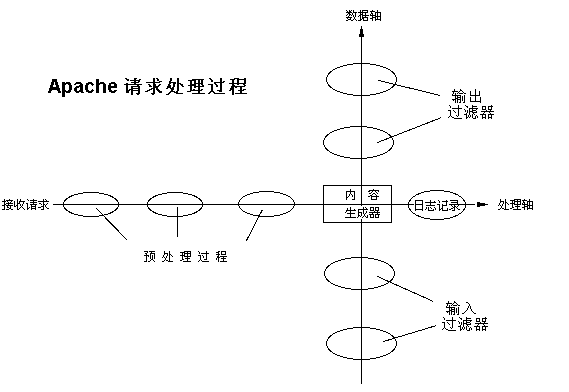

Apache HTTP Server 版本2.2

Apache HTTP Server 版本2.2

本文阐述Apache中过滤器的用法。

| 相关模块 | 相关指令 |
|---|---|
Apache 2.0 及以后的版本中使用了过滤器链，使得应用程序能够以高度灵活的、可配置的方式处理进入的数据和输出的数据，而无需关心这些数据来自哪里。我们可以预处理进入的数据和后处理(post-process)输出的数据。这些过程基本上独立于传统的请求处理阶段。

标准Apache发行版中的一些过滤器实例：
mod_include实现了服务端包含。mod_ssl实现了SSL加密(https)。mod_deflate实现了实时压缩/解压。mod_charset_lite在不同的字符集之间自动转换。mod_ext_filter将一个外部程序作为过滤器运行。Apache还在内部使用许多过滤器来对请求执行诸如分块、字节层次处理(byte-range handling)等功能。
可以从modules.apache.org或别处得到许多通过第三方过滤器模块实现的应用程序。其中的一些是：

Apache 2.1 及以后的版本中包含的mod_filter模块允许过虑器链在运行时进行动态配置。举例来说，你可以在代理无法得到原始服务器发送的初始信息的情况下，安装一个使用不同的过滤器来分别重写HTML、处理JPEG图片的代理。这是通过使用一个过滤器束(filter harness)来工作的，该过虑器束在运行时根据实际内容的不同将任务分配给不同的提供者(provider)。任何一个过滤器都何以被直接插入到过滤器链中并无条件的运行，或者动态的作为一个提供者(provider)插入。例如：
有两种使用过滤器的方法：简单方法和动态方法。通常，你应当使用两者之一；混合使用它们可能会导致意想不到的后果(虽然简单方法的输入过滤器可以和简单或动态方法的输出过滤器混合使用)。
简单方法是配置输出过滤器的唯一方法，并且对于需要静态过滤器链的输出过滤器来说是足够的。相关的指令有：
SetInputFilter,
SetOutputFilter,
AddInputFilter,
AddOutputFilter,
RemoveInputFilter,
RemoveOutputFilter 。
动态方法使输出过滤器能够进行静态的或者灵活的动态配置成为可能，详情请参见mod_filter模块文档。相关指令有：
FilterChain,
FilterDeclare,
FilterProvider 。
一个更高级的指令AddOutputFilterByType也被支持，但是可能存在一些问题，目前还不赞成使用它，而代之以动态配置。